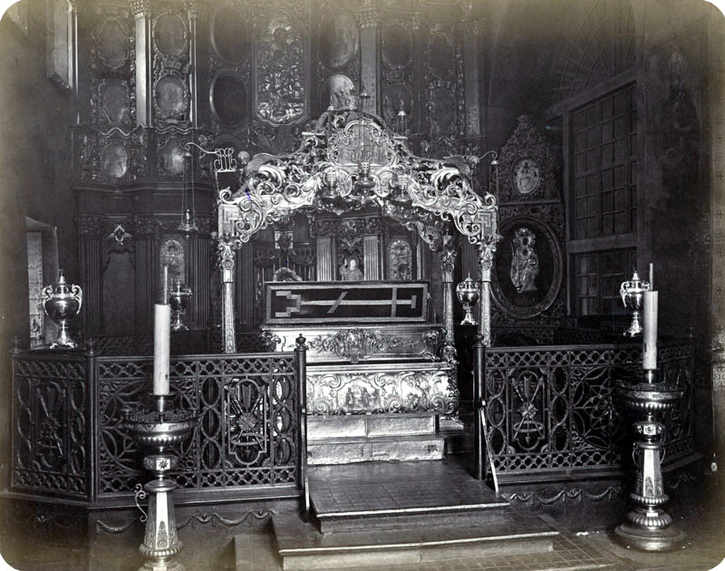
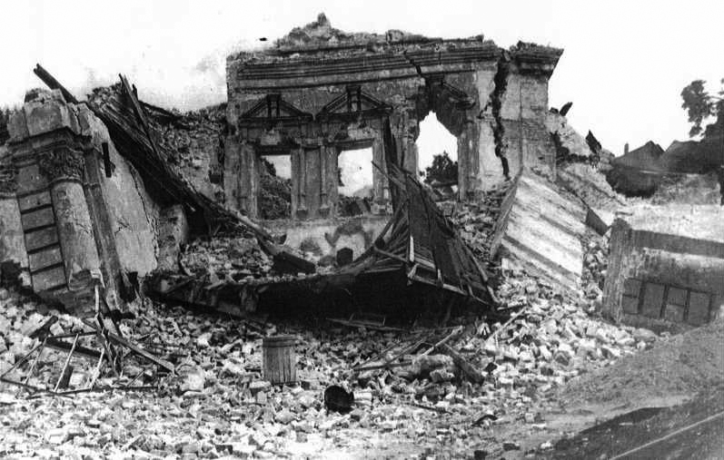

Михайлівський Золотоверхий монастир

Історія
Згідно з думкою деяких істориків, київський князь Ізяслав Ярославич, який мав християнське ім'я Димитрій, збудував монастир св. Димитрія та церкву у верхньому Києві поблизу Собору святої Софії в другій половині 1050-х років.Через півсторіччя його син Святополк II Ізяславич збудував у 1108–1113 роках монастирську церкву (закладена 11 липня 1108, тут і похований її фундатор), присвятивши її своєму патронові архангелу Михаїлу. Можливо, однією з причин, що спонукала князя Святополка збудувати церкву, стала його недавня перемога над половцями, оскільки архангел Михаїл був заступником воїнів. У монастирі зберігалися мощі святої великомучениці Варвари, які у 1108 році до Києва привезла дружина князя Святополка Ізяславича, дочка візантійського імператора Олексія І Комнина Варвара. Монастир був місцем поховання київських князів у ХІІ столітті.Під час монгольської навали в 1240-х роках монастир зазнав відчутних втрат. Монголи пошкодили собор та зняли його позолочені бані. 1496 року монастир відроджено і перейменовано з монастиря св. Димитрія на монастир св. Михаїла, відповідно до назви церкви, збудованої Святополком. Після численних відбудов та розширень впродовж XVI ст. монастир став одним з найбільших та найбагатших монастирів України.Греко-католицька церква у 1612 році отримала королівський привілей на монастир. Намісник унійного митрополита Іпатія Потія о. Грекович Антоній у 1618 році спробував поширити свою владу на обитель, що викликало різку реакцію: козаки схопили його та втопили в ополонці навпроти Видубицького монастиря.За митрополита Йова Борецького монастир став одним з центрів антиуніатської боротьби. У 1620 році він зробив його резиденцією відновленої православної Київської митрополії.17 грудня 1643 року король Владислав IV затверджує Філофея Кизаревича ігуменом Києво-Золотоверхого Михайлівського монастиря і закріплює за монастирем всі його володіння.30 жовтня 1671 року у Львові Михайло Вишневецький підтверджує Києво-Михайлівському монастиреві права на володіння маєтками Глеваха, Юр'ївка, Вета, Березівка та ін.1655 року за сприяння гетьмана Богдана Хмельницького покрито міддю та позолочено верх церкви Архистратига Михаїла Золотоверхого монастиря.За часів ігумена Іоаникія Сенютовича, у 1713—1715 роках, споруджено муровану трапезну церкву Іоана Богослова. Тоді ж збудовано мурований льох. Для будівництва трапезному церкви Іоана Богослова використали цеглу з Симеонівської церкви, яка стояла на Кудрявці та згоріла в 1676 році. У 1827 році церкву Іоана Богослова капітально відремонтували, а 1837 року її інтер'єр оформили розписами.У 1855–1856 роках збудовано церкву Св. Миколая при настоятельських покоях.У середині XIX — на початку XX століття формується комплекс келій та корпусів для прочан: келії Михайлівського відділення (1849—1852), готель для прочан (1857—1897), келії півчих (1894), келії Варваринського відділення (1898—1899), 2 будівлі готелів для прочан (1902—1903 та 1907—1908).
Зруйнування
1922 року Михайлівський монастир ліквідовано. В середині 1930-х років, після перенесення столиці УРСР з Харкова до Києва прийнято рішення про знесення собору та будівництво на його місці адміністративних будівель. Для цього в 1934 році вирішили провести конкурс на проєкт Урядового центру з місцем для парадів. На всіх проєктах поданих на конкурс, окрім одного, з розміщенням центру в районі Софіївської площі, зносився Михайлівський Золотоверхий собор. Єдиним з чотирьох проєктів, у якому собор і пам'ятник Богдану Хмельницькому зберігалися, був проєкт Йосипа Каракіса. У підсумку, в першому турі, затверджено проєкт архітектора Петра Юрченка. Дане рішення, за словами архітектурознавця Б. Ерофалова: «в принципі повторює загальну схему Каракіса, але більш лобове, з ліквідацією Михайлівського собору. І якщо розташування основних обсягів у Каракіса асиметричне — в перспективному завершенні площі і по північному її фланзі, — то Юрченко вибудував обидва функціональні обсяги по краю схилу у вигляді суворо похилих паралелепіпедів, але зберігши Присутні місця». У березні 1934 року вирішили відмовитися від минулого рішення й оголосили новий конкурс, на якому переміг проєкт архітектора Йосипа Лангбарда. Тим часом з досліджень Олега Юнакова з опорою на архівні документи видно, що хоч в проєктах І. Лангбарда і П. Юрченко собор відсутній, але не це є причиною знесення, оскільки рішення про знесення монастиря прийнято постановою Політбюро ЦК КП(б)У вже в лютому 1934 року, а демонтаж мозаїк почали проводити ще в 1933 році.Спроби ряду мистецтвознавців (зокрема, репресованих Миколи Макаренка, Дмитра Айналова) зберегти собор (хоча б домонгольську його частину) відкинуті владою, яка погодилася тільки на зняття зі стін будівлі давніх мозаїк і фресок.Правда були й ті, хто відкрито висловлювалися за знесення собору. Наприклад, Олександр Довженко одним з перших у 1932 році заявляв, що «при вирішенні проблеми будівництва парку культури Михайлівський монастир попроситься „піти“, він віджив свій вік. Абсолютно неприпустимо навіть думати, що ці стіни комусь потрібні. Я думаю, коли ми знесемо Михайлівський монастир, то будівництво парку дасть потрібний ефект».У 1934–1936 Михайлівський Золотоверхий собор, дзвіницю та частину інших споруд монастиря знесли у зв'язку з проєктом створення на цьому місці урядового центру. Останній планували зробити копією головного будинку ЦК КПУ — зараз Будівля міністерства закордонних справ України. Єдиний з українських вчених, хто відмовився підписати акт на знесення Михайлівського Золотоверхого монастиря — Микола Макаренко, якого невдовзі за це було репресовано.Перед знищенням унікального ансамблю української архітектури, була проведена дослідницька робота. Фрески, мозаїки перевезли до музеїв Москви, Ленінграду (Санкт-Петербургу), Новгорода та інших міст СРСР. Мозаїчну композицію «Євхаристія» перенесли до Софійського собору. Багато смальтового розпису потрапило до Лаврського заповідника. Урядового центру на місці Михайлівського Золотоверхого собору так і не збудували.В роки Другої світової війни деякі фрески вивезли до Німеччини, звідки вони потрапили до Ермітажу у Ленінграді. В Софійському соборі зберігалися: «Євхаристія», «Стефан і Фаддей» — фрагменти постатей святих; фрески — сцени з «Благовіщення», постать святого Захарії та ін. Мозаїка «Дмитро Солунський» і верхня частина фрескової постаті Самуїла — в Третьяковській галереї і Російському музеї в Санкт-Петербурзі.
Відновлення
Одним з ініціаторів відбудови Михайлівського Золотоверхого монастиря був Олесь Гончар, меморіальну дошку якому відкрито 17 травня 2011 року на будівлі собору.На початку 1990-х років Українська православна церква Київського патріархату розпочала збір коштів для відтворення собору. Грошей вистачило лише на початкові дослідження, стало зрозуміло, що без державної підтримки унікальну пам'ятку українського бароко не відбудувати. Українська спільнота надсилала численні звернення до голови держави про виділення фінансування на реставрацію. Нарешті, 9 грудня 1995 року Президент України Леонід Кучма видав указ, який визначав відбудову Михайлівського Золотоверхого монастиря загальнодержавним пріоритетом.Влітку 1997 року на Економічній брамі Михайлівського Золотоверхого монастиря відкрито меморіальну дошку з бюстом Миколи Макаренка.Першою постала дзвіниця в стилі українського бароко у первісному вигляді. Відкриття собору відбулося на День Києва 1998 року, за участю патріарха Київського і всієї Русі-України Філарета, який освятив монастир. Також були присутні президент Леонід Кучма, голова уряду Валерій Пустовойтенко та мер міста Києва Олександр Омельченко. В соборі проходили богослужіння Української православної церкви Київського патріархату, а поруч, як у давні часи, діє монастир.У лютому 2001 року чотири фрагменти фресок XII століття Михайлівського Золотоверхого собору, що зберігалися в Ермітажі, передали Україні. У січні 2004 року Міністерство культури Росії ухвалило рішення про передачу Україні з Ермітажу семи фресок київського Михайлівського Золотоверхого собору, які опинилися в Росії, восени 2004 передачу фресок закінчили.Головний архітектор проєкту відтворення Михайлівського Золотоверхого собору — Юрій Лосицький. У відновленні розписів інтер'єру брали участь такі українські митці: Олександр Бородай.
Євромайдан
Під час силового розгону Євромайдану в ніч на 30 листопада 2013 року частина людей, які втекли від підрозділу міліції «Беркут», знайшла прихисток на території Михайлівського Золотоверхого монастиря. Під час сутичок із «Беркутом» у соборі двічі (30 листопада 2013 і 19 лютого 2014) переховувались мітингувальники та розгортали тимчасовий штаб. Семінаристи із КПБА допомагали мітингувальникам: ходили на нічні чергування, приносили медикаменти, робили чай, носили гарячу воду.У храмі апостола Івана Богослова був облаштований імпровізований шпиталь. У Михайлівському Соборі спали люди і стояли медичні препарати, крапельниці.До 1 грудня ми залишались єдиним місцем для відпочинку та сну немісцевих учасників протесту. У неділю частина мітингувальників переїхала у будинок профспілок, КМДА, тепер вже і у Жовтневий палац. Відкрив свої двері римо-католицький храм, але все одно кожну ніч собор наш заповнений людьми. Ми зберегли нічне чергування студентів семінарії і церковнослужителі продовжують всю ніч відправляти богослужіння.— ректор КПБА, протоієрей Олександр Трофимлюк, У ніч на 11 грудня 2013 року дзвони Михайлівського Золотоверхого монастиря вперше за 8 століть били на сполох, до цього востаннє таке відбувалось у 1240 році, під час Монгольської навали. Саме завдяки звуку дзвонів до центру столиці зійшлося безліч киян і спроба зачистити Євромайдан працівниками спецпідрозділу «Беркут» та військовослужбовцями Внутрішніх військ МВС виявилася невдалою.26 січня 2014 року в соборі Михайлівського Золотоверхого монастиря пройшла панахида за загиблим активістом Євромайдану Михайлом Жизневським.
Сучасність
У серпні 2015 року на мурах Михайлівського монастиря з'явилася Стіна пам'яті загиблих захисників України. 15 грудня 2018 року, після Об'єднавчого собору українських православних церков, Михайлівський Золотоверхий монастир перейшов у підпорядкування Православної церкви України. Наступного дня митрополит Київський і всієї України Епіфаній відслужив першу літургію як предстоятель Православної церкви України.9 грудня 2020 р. о 12.00 у Варваринському приділі Михайлівського Золотоверхого собору відбувся похорон українського композитора, Народного артиста України — Володимира Петровича Губи. Похорон відслужив ієромонах Михаїл (Карнаух).У 2020 році повністю відреставрували дзвіницю і змінили дзвони. 4 лютого 2021 року у Михайлівському соборі братія на чолі із архімандритом Лаврентієм (Живчиком) відслужила похорон над тілом спочилого Проскурні Сергія Владиславовича, українського театрального режисера.